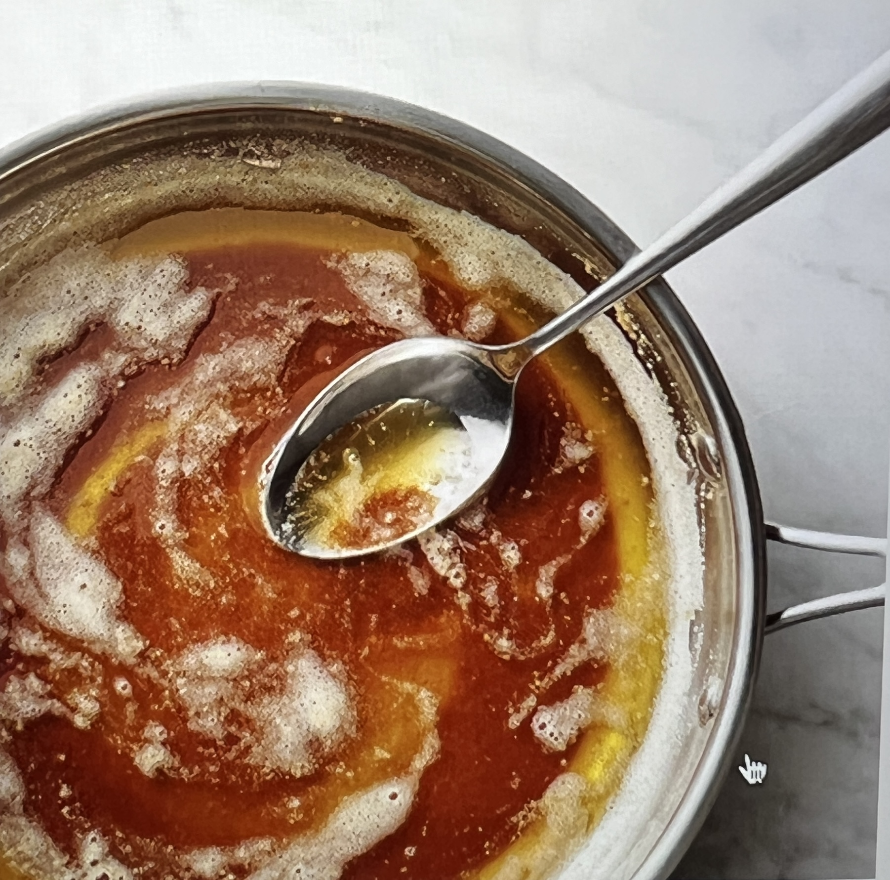

The baseline for a good cookie is brown butter. What is brown butter? Well, unlike oils, which are composed of 100% fat, butter is actually only 80% (82% for cultured European butters) fat. The rest of its composition is 16% water and 4% milk solids (hence, why oils are 120 calories per tablespoon but butter is only 100). The water in butter is binded with the milk solids and prevents the proteins from browning (or the fancier term, "undergoing the Maillard reaction"). However, when you melt butter, and continue melting it, you'll see steam escape. That is the water evaporating. With the water gone, the milk solids have no choice but to brown and develop a much more complex flavor. Butter goes from brown to burned in mere seconds, so be careful!
You need to let cookie dough rest because:
I have never used a measuring scoop for cookie dough; I prefer a food scale. Ultimately, though, it's a bit of trial and error with the amount and time in the oven if you can't get your hands on a food scale (but, like, invest in one please, they're like $8 on Amazon). Err on the side of less time; raw and gooey cookies >>> burnt cookies.
Food Scale Here!Try to make sure the dough is cold when you put them in the oven. You want to take the bowl out and leave at room temperature for 15 minutes because you need it to be malleable enough to roll, but it's the water from the cold butter rapidly rising in the oven that gives the cookies their "lift." After the first batch, as you continue making more balls, stick them in the fridge and take them out when you are ready to bake.